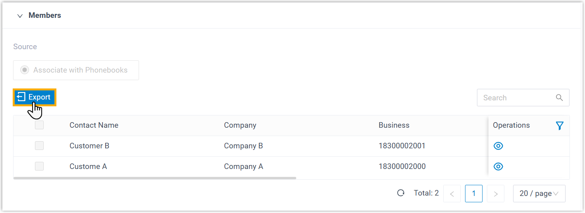
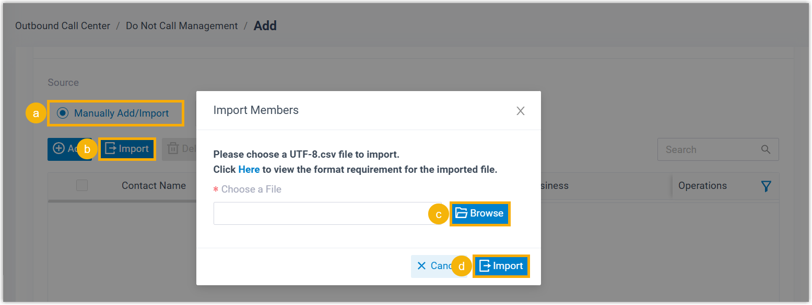

Export and Import a DNC List
The DNC lists configured on Yeastar P-Series Software Edition can be exported and saved as a template. You can fill in desired contact information in the exported file, and import the file to PBX again. This topic describes how to export and import a DNC list.
Export a DNC list
- Log in to PBX web portal, go to .
- On the right of the desired DNC list, click .
- In the Members section, click
Export.

A CSV file is saved to your computer. To check and edit parameters in the CSV file, see Contacts Parameters.
Import a DNC list
We recommend that you export DNC contacts data to a CSV file first, and use the file as a template to start with. In this way, you can save time and effort.
- Prerequisites
-
Requirements of an imported file:
- Format: UTF-8.CSV
- Size: Less than 300 MB
- File name: Less than 127 characters
- Import parameters: Ensure that the import parameters meet
requirements.
For more information, see Contacts Parameters.
- Procedure
-
- Log in to PBX web portal, go to .
- On the top of the list, click Add.

- In the Basic section, complete the basic
settings.

- In the Name field, enter a name to help you identify the DNC list.
- Optional: To select the DNC list by default when creating an outbound campaign, select the checkbox of Select by default when creating an outbound campaign.
- In the Members section, import DNC
contacts.

- In the Source section, select Manually Add/Import.
- Click Import.
- In the pop-up window, click Browse to select and upload a CSV file, then click Import.
- Click Save.